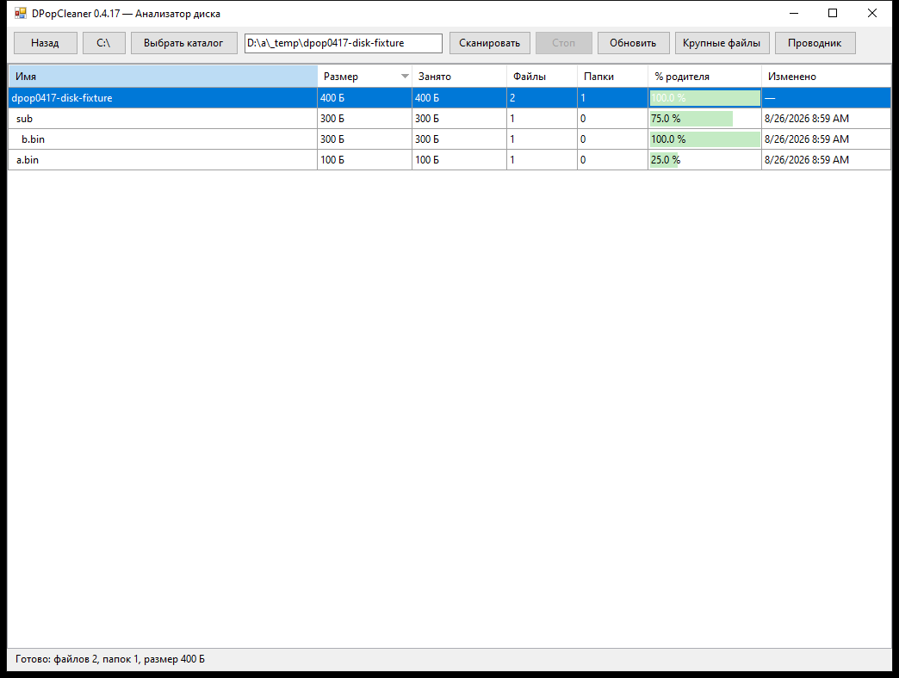
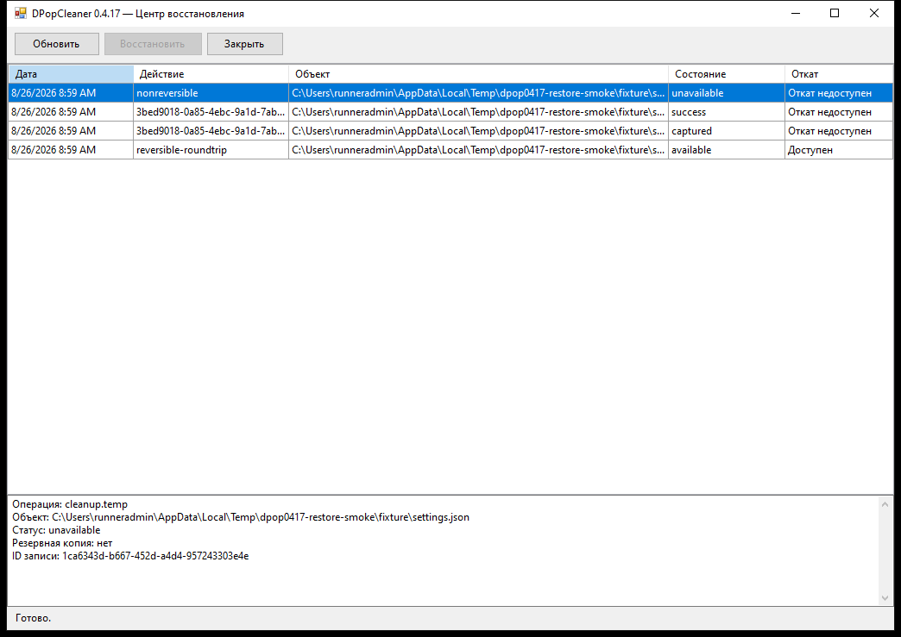

Безопасное автообновление
`SimpleUpdate.exe` проверяет stable-канал в фоне. Скачанный установщик принимается только после совпадения точного размера и SHA-256.
SimpleUpdate.exeDPopCleaner 0.4.17 rev.3 сохраняет оригинальное ядро 0.2.14 без изменения байтов. `SimpleUpdate.exe` запускает старый интерфейс, добавляет в настоящие Настройки автообновление и проверяет скачанный установщик по размеру и SHA-256.

Реальный скриншот из Windows UI smoke, а не макет.
DPopCleaner 0.4.17 rev.3 проходит финальную проверку установщика и публикации. Кнопка загрузки активируется только после появления корректного SHA-256 в manifest.
Что нового
Автообновление и новые функции вынесены из замороженного ядра и проходят собственные Windows-тесты.
`SimpleUpdate.exe` проверяет stable-канал в фоне. Скачанный установщик принимается только после совпадения точного размера и SHA-256.
SimpleUpdate.exeИерархия каталогов, логический и занятый размер, файлы, папки, процент родителя и время изменения. Длительное сканирование не блокирует интерфейс.
DiskAnalyzer.exeИстория операций, детали и явный статус отката. Необратимые действия не маскируются под восстанавливаемые.
RestoreCenter.exeОсновной DPopCleaner.exe проверяется на byte-identical соответствие исходному замороженному ядру перед упаковкой.
frozen coreГалочка «Включить автообновление» добавляется непосредственно в настоящую страницу Настройки через Win32 UI-bridge, без патча DPopCleaner.exe.
Settings bridgeПосле сборки сайт получает фактический размер и SHA-256 именно опубликованного DPopCleaner_Setup_0.4.17.exe.
verified manifestРеальный интерфейс
Эти изображения создаются теми же smoke-тестами, которые блокируют релиз при ошибке.
TreeSize-подобная таблица и контролируемое сканирование.

История, детали и отключённый откат для необратимых записей.
Проверка сборки
Windows pipeline проверяет SimpleUpdate и настоящий старый UI, собирает companion-модули, выполняет unit-тесты, staged UI smoke, реальный restore round-trip, подтверждает неизменность ядра 0.2.14, собирает Inno Setup и тестирует уже установленный пакет. Публикация происходит только после этих этапов.
будет опубликован после финальной сборкиFAQ
Коротко о том, что именно входит в 0.4.17 rev.3.
Нет. Основное ядро 0.2.14 сохраняется неизменным; SimpleUpdate и новые возможности работают отдельными компонентами.
SimpleUpdate сверяет stable manifest по HTTPS, предлагает обновление пользователю, скачивает установщик и проверяет точный размер и SHA-256. Только проверенный пакет может быть запущен.
После публикации SHA-256 из update/stable.json отображается на этой странице. Ссылка активируется только при корректном manifest с ненулевым размером и 64-символьным SHA-256.
DPopCleaner 0.4.17 rev.3
Windows x64 · ожидается публикация